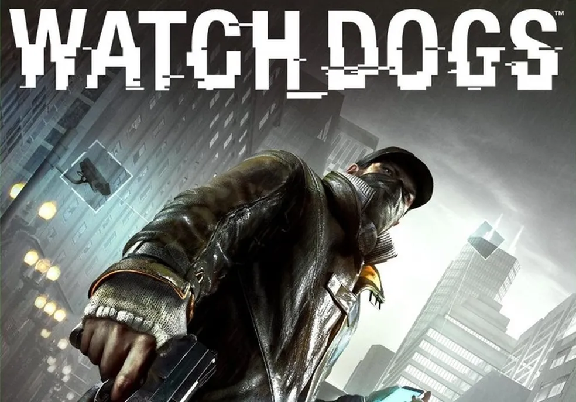
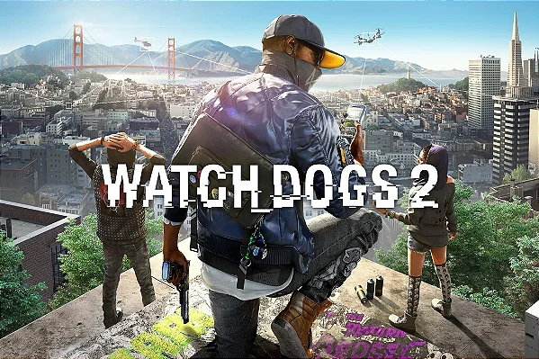
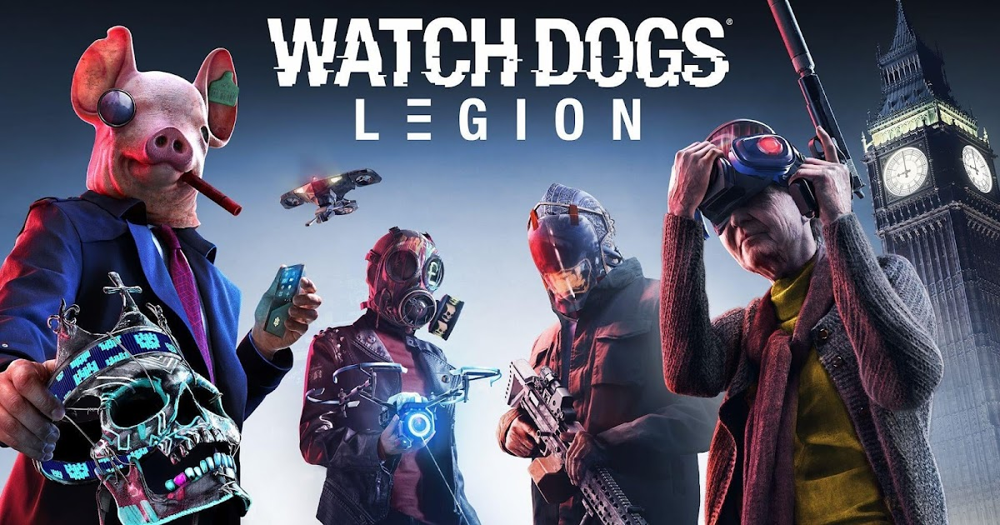

2014Watch Dogs
O jogo que iniciou a franquia, colocando você no papel de Aiden Pearce, um hacker vigilante em Chicago.
- Hacking urbano inovador
- História sombria e pessoal
- Ambiente de Chicago detalhado
Explore o universo hacker da Ubisoft com nossos reviews e análises detalhadas

2014O jogo que iniciou a franquia, colocando você no papel de Aiden Pearce, um hacker vigilante em Chicago.

2016Marcus Holloway e a DedSec levam a luta hacker para a vibrante São Francisco.

2020Revolucione o sistema em um futuro distópico de Londres onde qualquer pessoa pode se tornar o herói.
| Jogo | Ano | Protagonista | Localização | Inovação Principal |
|---|---|---|---|---|
| Watch Dogs | 2014 | Aiden Pearce | Chicago | Sistema de hacking urbano |
| Watch Dogs 2 | 2016 | Marcus Holloway | São Francisco | Hacking mais dinâmico |
| Watch Dogs: Legion | 2020 | Sistema "Play as Anyone" | Londres | Recrutamento de NPCs jogáveis |
Introduziu o conceito de hacking como arma principal em um mundo aberto, com uma narrativa mais séria e sombria.
Adotou um tom mais descontraído, com personagens carismáticos e mecânicas de hacking mais refinadas e versáteis.
Inovou com o sistema "Play as Anyone", permitindo recrutar e jogar com qualquer NPC do mundo do jogo.